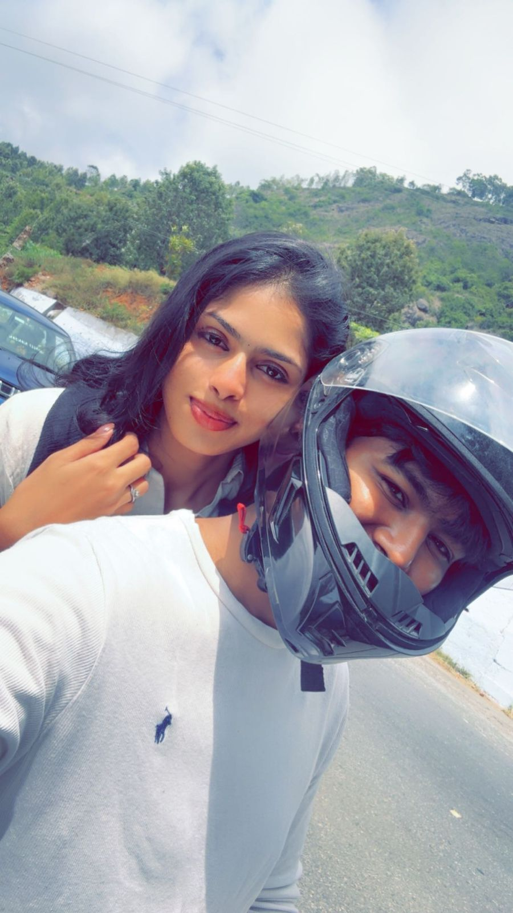
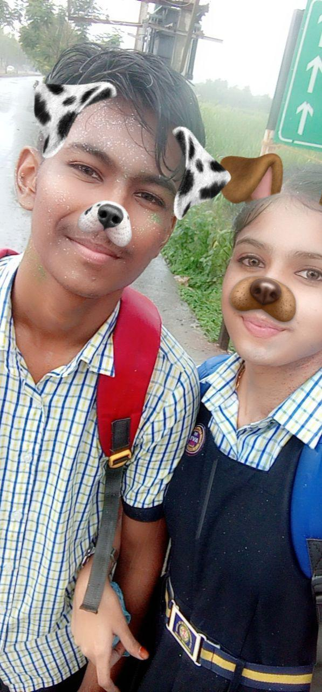
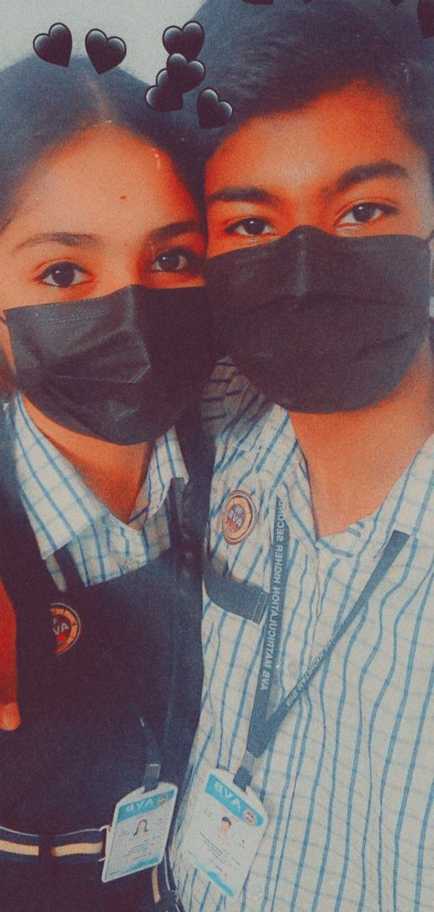
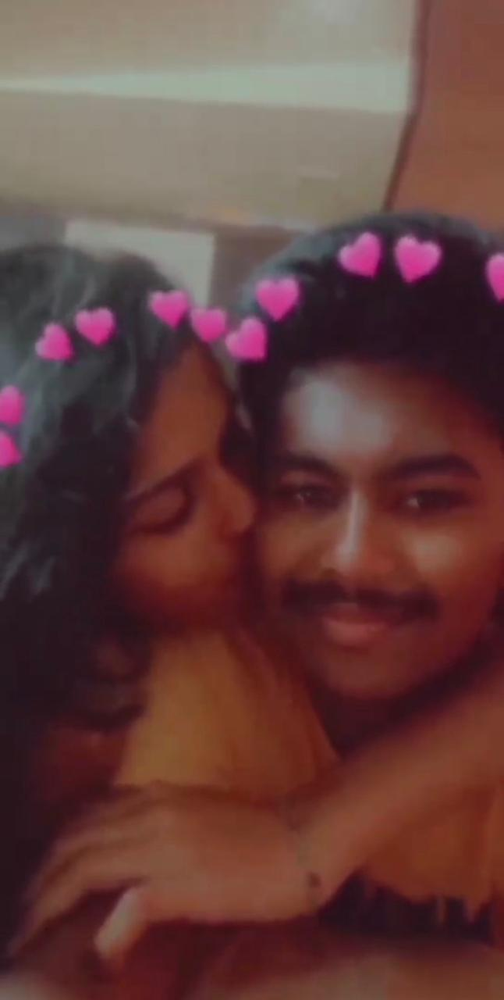
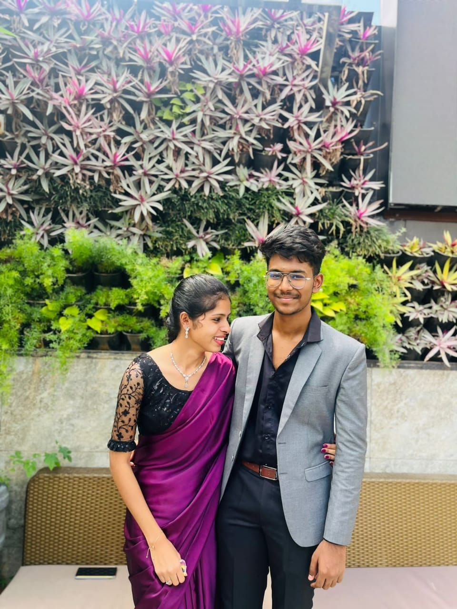
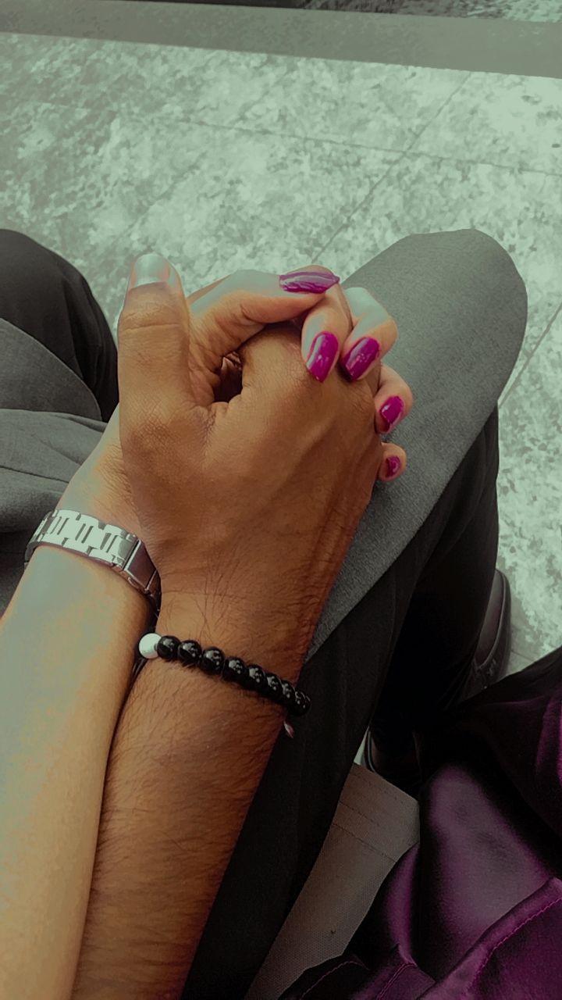
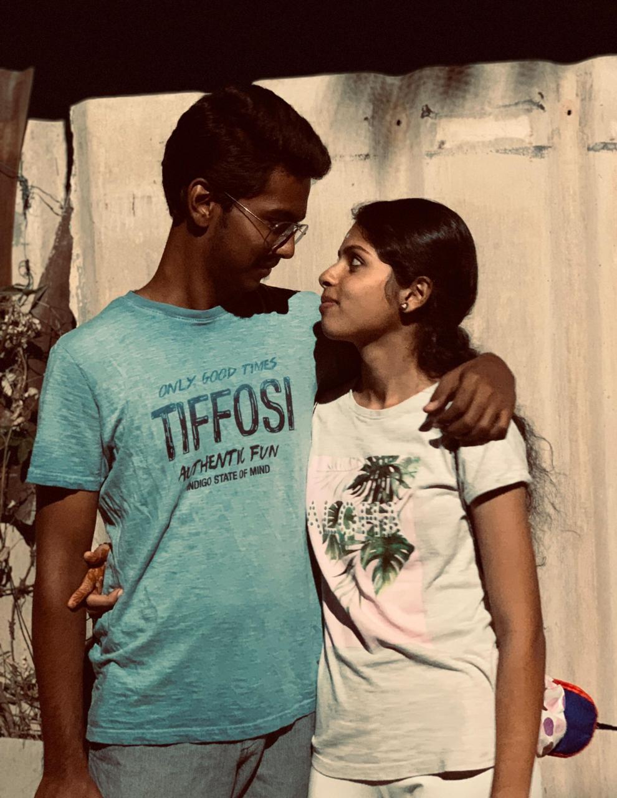

I made something special for yuu...
It's not just a birthday wish.
It's a little piece of our story. ❤️
11 • 09 • 2026

Today is not just another day. Today is the day the most special person in my life turns 20. ❤️
And I wanted to give yuu something that yuu can keep as a memory forever.
We were just kids in 10th standard when our beautiful story began.
I never knew that one date would become one of the most important dates in my life.

The beginning of our beautiful journey ❤️
Two young hearts, one beautiful beginning.
The day we officially became "US".
So many smiles, laughs and unforgettable moments.
Celebrating your beautiful 20th birthday.
Many more birthdays, memories and years together.
Every picture holds a little piece of our story.




My Love, ❤️
First of all, Happy 20th Birthday to the most special person in my life. 🎂❤️
From 05/11/2021, when we were just in 10th standard, till today, we have come such a long way. We were so young when our story started, but look at us now... still together, still loving each other nd still making memories. ❤️
Yuu have told me about ur struggles, ur pain, the things that hurt yu, the situations yu had to go through nd all those moments that made yu stronger. I know about the things yu have faced, even the things that yu don't easily share wid everyone.
nd honestly, sometimes I wish I could go back nd take away every difficult moment yu had to face. I wish I could have been there from the beginning to protect your heart from everything that hurt yu.
But I can't change ur past. What I can do is stay beside yu for everything that comes next. ❤️
So on ur 20th birthday, my biggest wish for yu is that your life changes completely for the better from this day onwards.
I want all the sadness, pain nd difficult days to slowly become a part of your past. I want the coming years to bring you more peace, more happiness, more success nd all the good things yu truly deserve.
I know there have been people who have spoken badly about yu, judged yu, underestimated yu and made yu feel like yu were not enough.
But I believe in yuu so much. And one day, I want to see yu standing in a position where yu don't need to explain yourself to anyone. Let ur success speak for you. Let ur happiness speak for you. Let the life you build become the answer to everything people once said about yu. ❤️
I genuinely wish that this 20th year becomes the beginning of something beautiful for yu. I want to see yu achieve everything yu dream about. I want to see yu successful, peaceful, confident nd genuinely happy.
And when that day comes, I want to be there beside yu, looking at yu and feeling proud of the person yu became. 🥹❤️
Whenever yu feel tired, disappointed or feel like giving up, please remember that yu have me. You don't have to fight every battle alone.
I'll be there to listen to yu, support yu, motivate yu, celebrate your little achievements and stand beside you when things don't go as planned.
I may not have solutions for every problem in your life, but I promise I'll always be someone yu can come back to. I'll listen to yu without judging yu. I'll hold ur hand when yu need it. And I'll always want to see yu happy. ❤️
I don't want just the good version of yu. I want to be there through every version of yu when you're happy, when you're stressed, when you're confused, when you're chasing your dreams nd even when yuu feel like everything is going wrong.
Because loving yu is not only about being there during the happiest moments. It's about choosing yu nd standing beside yu through everything. ❤️
nd I don't know exactly what the future has written for us, but I know what I wish for.
I wish for many more birthdays with yuu. Many more late-night talks. Many more silly fights and making up. Many more photos. Many more achievements. Many more adventures. And most importantly, many more years of uss. ❤️
I hope this birthday marks the beginning of ur happiest chapter yet. I hope everything you've been waiting for slowly finds its way to yu. I hope ur hard work pays off. I hope ur dreams become reality. And I hope you finally get the happiness nd peace you've always deserved.
No matter how successful yu become, no matter where life takes yu, I hope yu always remember the girl who was there from the beginning and believed in you even when things weren't easy. ❤️
I'm so proud of yu for making it this far. And I'm even more excited to see the person going to become.
So here's to your 20th year new beginnings, bigger dreams, beautiful achievements, endless happiness nd a life you've always wanted. 🎂✨❤️
Happy 20th Birthday, my love. Whatever happens from here, always remember that I'll be cheering for yu, believing in yu and loving yewww.
From the day we first met...
To today...
And hopefully, forever. ♾️❤️
I LOVE YEWWWWWWWWWW ENDLESSLY ❤️
Mmmmmwahhhhhhhhhhhhhhhhhhhhhh💋💋
Since you're turning 20, here are 20 little reasons why I love yewww.
We started this journey as two young hearts...
And I hope we continue growing, dreaming and creating beautiful memories together.
Your 20th birthday is just another beautiful chapter in our story. ❤️

You are not just my boyfriend.
You are my person, my happiness, my comfort, and my everything. ❤️
I LOVE YEWWWWW SOOOOO MUCHHH SWEETHEART ❤️